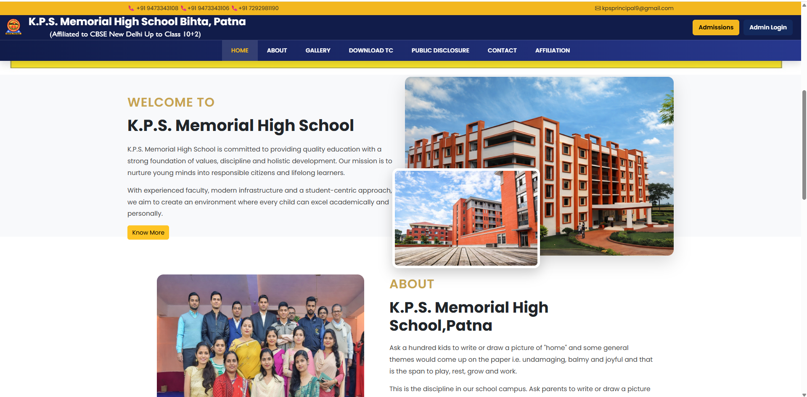
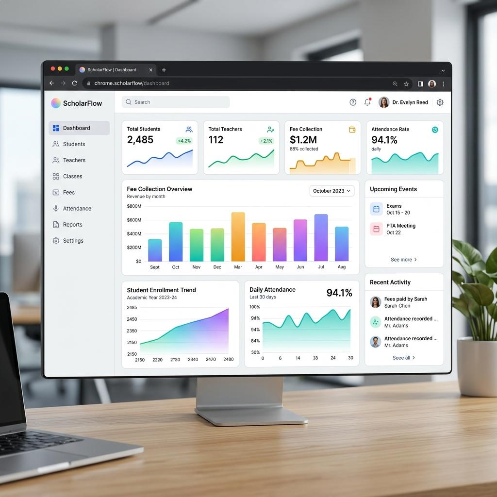
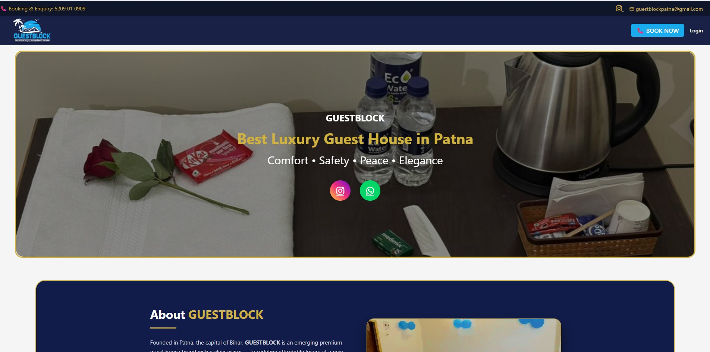
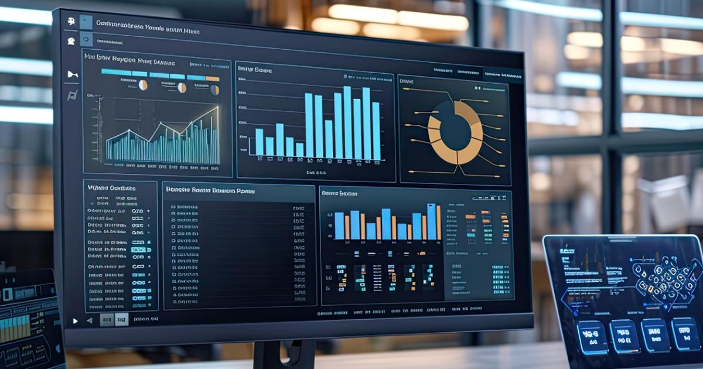
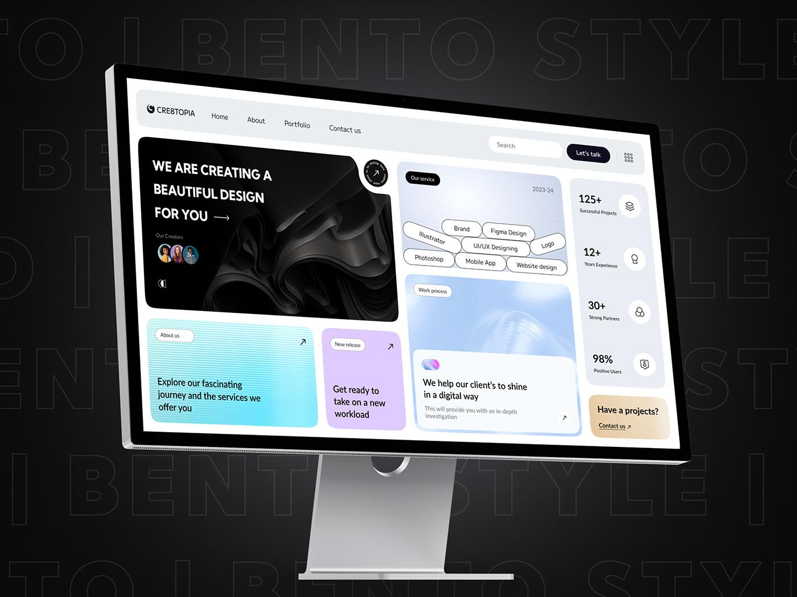
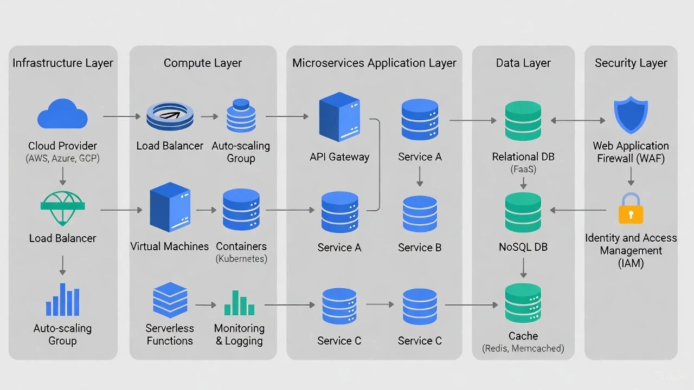

0
Services Delivered
Digital capabilities built around real business needs.
We combine engineering, AI, and thoughtful design to build digital solutions that help businesses move forward.
Digital capabilities built around real business needs.
Solutions designed to turn ideas into working products.
Modern tools and platforms powering our solutions.
A focus on quality, collaboration, and continuous improvement.
Tools and technologies we use to build smarter digital experiences.
 Google
Google
 Microsoft
Microsoft
 Amazon
Amazon
 Adobe
Adobe
 Shopify
Shopify
 Stripe
Stripe
 OpenAI
OpenAI
 Meta
Meta
 Figma
Figma
 GitHub
GitHub
 WordPress
WordPress
 AWS
AWS
Explore websites, software systems, and AI-powered solutions designed, developed, and delivered by our team for businesses and institutions.
Designed and developed a responsive school website to present the school’s information and make it easy for parents, students, and prospective families to explore. The website highlights the school’s profile, facilities, learning environment, important updates, and contact information.


Developed an AI-powered photo management application that organizes images into categories based on their visual content. Users can import photos for automatic organization and export sorted collections for convenient access and sharing.
Designed and developed a website for GuestBlock to present its services and make key information easy for visitors to find. The site provides a central place to explore the company’s offerings, learn about the business, and get in touch.

Designed and developed a responsive website to strengthen the school’s digital presence and improve access to essential information. The platform presents the school’s profile, academic environment, facilities, announcements, and contact details, helping students, parents, and prospective families stay informed and connected. Users can import photos for automatic organization and export sorted collections for convenient access and sharing.
Designed and developed a responsive website for an import and export business to showcase its products, services, and international trade capabilities. The website helps potential clients explore the company’s offerings and connect with the business.
Designed and developed a system to organize GST-related records and simplify tax management. The platform supports invoice tracking, tax calculations, filing preparation, and financial summaries, helping businesses manage their GST data more efficiently.
Designed and developed an office management system to centralize employee records, attendance, task scheduling, document organization, and team activities. The platform helps streamline routine office operations and gives managers an organized view of key workflows.
Developed an AI-powered photo management application that organizes images into categories based on their visual content. Users can import photos for automatic organization and export sorted collections for convenient access and sharing.
Strong digital solutions need more than a single technology. We bring together complementary skills to help teams move from a clearly defined problem to a solution they can test, use and improve.
Discuss your project ↗AI-powered features grounded in practical use cases.

Structured data and workflows that support decisions.

Useful experiences shaped around real user needs.

Maintainable architecture designed to evolve.
We believe effective technology starts with understanding the problem, making considered decisions and delivering work that can stand up to real-world use.
Understand the underlying challenge before selecting a tool, platform or technical approach.
Focus on meaningful use cases, appropriate evaluation and useful outcomes.
Connect frontend, backend, data and integrations into a coherent digital solution.
Build with testing, clarity and future improvements in mind.
The right solution begins with understanding the context, people and processes behind the challenge.
 01
01
Information workflows, patient-facing experiences and operational tools.
Learning platforms, assessment systems and digital administration.
Customer experiences, reporting and connected commerce workflows.
Data workflows, reporting tools and process automation with appropriate controls.
Operational dashboards, data integration and workflow visibility.
Document workflows, knowledge tools and productivity-focused applications.
Clarify goals, users, requirements, constraints and the outcomes that matter.
Define the user experience, solution architecture and delivery priorities.
Develop and test in focused iterations with opportunities to review progress.
Use feedback and observed performance to refine the solution over time.
Explore the kinds of challenges that can be addressed with intelligent applications, integrated systems and thoughtful product engineering.
Explore projects ↗A concept for making organisational information easier to find and use.
A concept dashboard for turning business data into actionable insights.
A concept for connecting routine tasks into a more consistent workflow.
 DIGITAL EXPERIENCE
DIGITAL EXPERIENCE
A concept for building intuitive, responsive and user-friendly digital products.
We believe strong digital products are created by combining clear thinking, responsible engineering and a genuine understanding of the people who use them.
Learn about our approach ↗Here are a few useful starting points for planning a digital or AI project.
Our service areas include AI application development, data engineering, software development, web experiences, cloud-ready systems and workflow automation.
Yes. Projects can start with discovery, requirements clarification, solution planning and a defined scope before implementation begins.
Depending on the application and requirements, AI capabilities may be integrated through APIs, retrieval systems or other suitable technical approaches.
Visit the contact page and share your goals, core requirements, expected timeline and budget range. This helps establish a useful starting point.
Tell us about the challenge you want to solve. Let's explore the right digital solution together.
Start a conversation ↗